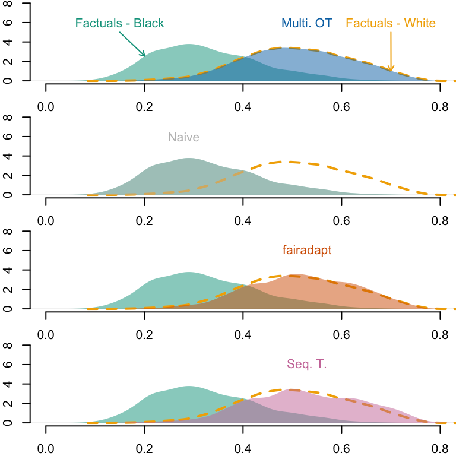
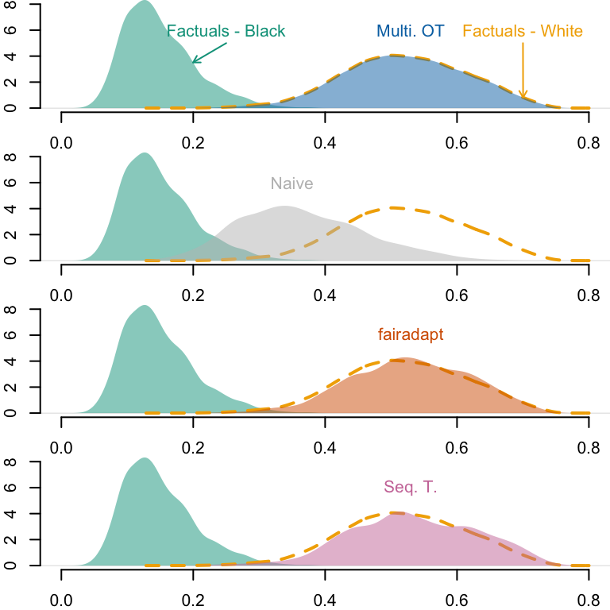

This chapter compares the different methods used to create counterfactuals by examining the impacts on the new predictions made by the classifiers (aware and unaware).
We load the dataset where the sensitive attribute (\(S\)) is the race, obtained Chapter 6.3:
load("../data/df_race.rda")
Naive counterfactuals constructed when simply changing the sensitive attribute of individuals from the minority group, and predictions by the classifiers (see Chapter 8):
We also need the predictions made by the classifier (see Chapter 7):
# Predictions on train/test setsload("../data/pred_aware.rda")load("../data/pred_unaware.rda")# Predictions on the factuals, on the whole datasetload("../data/pred_aware_all.rda")load("../data/pred_unaware_all.rda")
We load our package:
devtools::load_all("../seqtransfairness/")
ℹ Loading seqtransfairness
# If installed:# library(seqtransfairness)
We create a tibble with the factuals and the predictions by the aware model, an another with the predictions by the unaware model:
Let us focus on the first three Black individuals from the dataset. We will compare the predicted values by the classifier (see Chapter 7) made using the observed characteristics, and the changes in the predictions when using counterfactuals. We use the three types of counterfactuals explored in the previous chapters.
# A tibble: 15 × 9
S S_origin X1 X2 pred type id_indiv counterfactual Y
<chr> <chr> <dbl> <dbl> <dbl> <chr> <int> <chr> <fct>
1 Black Black 2.8 29 0.300 factual 24 none <NA>
2 Black Black 3.2 19 0.206 factual 40 none <NA>
3 Black Black 2.6 23 0.198 factual 51 none <NA>
4 White Black 3.3 30 0.380 counterfactual 24 naive 1
5 White Black 2.9 31 0.344 counterfactual 40 naive 0
6 White Black 3.4 32 0.429 counterfactual 51 naive 0
7 White Black 3.20 37.6 0.502 counterfactual 24 ot <NA>
8 White Black 3.29 28.0 0.345 counterfactual 40 ot <NA>
9 White Black 2.96 32.1 0.371 counterfactual 51 ot <NA>
10 White Black 3.25 37.6 0.509 counterfactual 24 fpt <NA>
11 White Black 3.6 29.9 0.419 counterfactual 40 fpt <NA>
12 White Black 3.1 32.3 0.394 counterfactual 51 fpt <NA>
13 White Black 3.3 37.5 0.515 counterfactual 24 seq <NA>
14 White Black 3.6 28.5 0.395 counterfactual 40 seq <NA>
15 White Black 3.1 32 0.388 counterfactual 51 seq <NA>
# A tibble: 15 × 9
S S_origin X1 X2 pred type id_indiv counterfactual Y
<chr> <chr> <dbl> <dbl> <dbl> <chr> <int> <chr> <fct>
1 Black Black 2.8 29 0.133 factual 24 none <NA>
2 Black Black 3.2 19 0.0933 factual 40 none <NA>
3 Black Black 2.6 23 0.0882 factual 51 none <NA>
4 White Black 3.3 30 0.416 counterfactu… 24 naive 1
5 White Black 2.9 31 0.382 counterfactu… 40 naive 0
6 White Black 3.4 32 0.457 counterfactu… 51 naive 0
7 White Black 3.20 37.6 0.515 counterfactu… 24 ot <NA>
8 White Black 3.29 28.0 0.386 counterfactu… 40 ot <NA>
9 White Black 2.96 32.1 0.405 counterfactu… 51 ot <NA>
10 White Black 3.25 37.6 0.522 counterfactu… 24 fpt <NA>
11 White Black 3.6 29.9 0.451 counterfactu… 40 fpt <NA>
12 White Black 3.1 32.3 0.425 counterfactu… 51 fpt <NA>
13 White Black 3.3 37.5 0.526 counterfactu… 24 seq <NA>
14 White Black 3.6 28.5 0.430 counterfactu… 40 seq <NA>
15 White Black 3.1 32 0.420 counterfactu… 51 seq <NA>
# Factualstb_unaware_factuals <- tb_unaware |>filter(counterfactual =="none")# Predicted valuespred_unaware_factuals_black <- tb_unaware_factuals |>filter(S =="Black") |>pull("pred")pred_unaware_factuals_white <- tb_unaware_factuals |>filter(S =="White") |>pull("pred")# Estimated densitiesd_unaware_factuals_black <-density(pred_unaware_factuals_black)d_unaware_factuals_white <-density(pred_unaware_factuals_white)par(mfrow =c(4, 1), mar =c(2, 2, 0, 0))x_lim <-c(0, .8)y_lim <-c(0, 8)# OTtb_unaware_ot <- tb_unaware |>filter(counterfactual =="ot")# Predicted values, focusing on Black --> Whitepred_unaware_ot_black_star <- tb_unaware_ot |>filter(S =="White") |>pull("pred")# Estimated densitiesd_unaware_ot_black_star <-density(pred_unaware_ot_black_star)plot( d_unaware_factuals_black,main ="", xlab ="", ylab ="",axes =FALSE, col =NA,xlim = x_lim, ylim = y_lim)axis(1)axis(2)polygon(d_unaware_factuals_black, col =alpha(colours_all[["Source"]], .5), border =NA)lines(d_unaware_factuals_white, col = colours_all[["Reference"]], lty =2, lwd =2)polygon(d_unaware_ot_black_star, col =alpha(colours_all[["OT"]], .5), border =NA)text(x = .15, y =6, "Factuals - Black", col = colours_all[["Source"]])pos_arrow <- .2ind_min <-which.min(abs(d_unaware_factuals_black$x - pos_arrow))arrows(x1 = d_unaware_factuals_black$x[ind_min],y1 = d_unaware_factuals_black$y[ind_min],x0 = .15, y0 =5,length =0.05, col = colours_all[["Source"]])text(x = .53, y =6, "Multi. OT", col = colours_all[["OT"]])pos_arrow_ref <- .7text(x = pos_arrow_ref, y =6, "Factuals - White", col = colours_all[["Reference"]])ind_min_ref <-which.min(abs(d_unaware_factuals_white$x - pos_arrow_ref))arrows(x1 = d_unaware_factuals_white$x[ind_min_ref],y1 = d_unaware_factuals_white$y[ind_min_ref],x0 = pos_arrow_ref, y0 =5,length =0.05, col = colours_all[["Reference"]])# Naivetb_unaware_naive <- tb_unaware |>filter(counterfactual =="naive")# Predicted values, focusing on Black --> Whitepred_unaware_naive_black_star <- tb_unaware_naive |>filter(S =="White") |>pull("pred")# Estimated densitiesd_unaware_naive_black_star <-density(pred_unaware_naive_black_star)plot( d_unaware_factuals_black,main ="", xlab ="", ylab ="",axes =FALSE, col =NA,xlim = x_lim, ylim = y_lim)axis(1)axis(2)polygon(d_unaware_factuals_black, col =alpha(colours_all[["Source"]], .5), border =NA)lines(d_unaware_factuals_white, col = colours_all[["Reference"]], lty =2, lwd =2)polygon(d_unaware_naive_black_star, col =alpha(colours_all[["Naive"]], .5), border =NA)text(x = .28, y =6, "Naive", col = colours_all[["Naive"]])# Fairadapttb_unaware_fpt <- tb_unaware |>filter(counterfactual =="fpt")# Predicted values, focusing on Black --> Whitepred_unaware_fpt_black_star <- tb_unaware_fpt |>filter(S =="White") |>pull("pred")# Estimated densitiesd_unaware_fpt_black_star <-density(pred_unaware_fpt_black_star)plot( d_unaware_factuals_black,main ="", xlab ="", ylab ="",axes =FALSE, col =NA,xlim = x_lim, ylim = y_lim)axis(1)axis(2)polygon(d_unaware_factuals_black, col =alpha(colours_all[["Source"]], .5), border =NA)lines(d_unaware_factuals_white, col = colours_all[["Reference"]], lty =2, lwd =2)polygon(d_unaware_fpt_black_star, col =alpha(colours_all[["Fairadapt"]], .5), border =NA)text(x = .53, y =6, "fairadapt", col = colours_all[["Fairadapt"]])# Sequential transporttb_unaware_seq <- tb_unaware |>filter(counterfactual =="seq")# Predicted values, focusing on Black --> Whitepred_unaware_seq_black_star <- tb_unaware_seq |>filter(S =="White") |>pull("pred")# Estimated densitiesd_unaware_seq_black_star <-density(pred_unaware_seq_black_star)plot( d_unaware_factuals_black,main ="", xlab ="", ylab ="",axes =FALSE, col =NA,xlim = x_lim, ylim = y_lim)axis(1)axis(2)polygon(d_unaware_factuals_black, col =alpha(colours_all[["Source"]], .5), border =NA)lines(d_unaware_factuals_white, col = colours_all[["Reference"]], lty =2, lwd =2)polygon(d_unaware_seq_black_star, col =alpha(colours_all[["Seq. T."]], .5), border =NA)text(x = .53, y =6, "Seq. T.", col = colours_all[["Seq. T."]])
Figure 12.3: Densities of predicted scores for Black individuals with factuals and with counterfactuals. The yellow dashed line corresponds to the density of predicted scores for White individuals, using factuals.

Codes used to create the Figure.
# Factualstb_aware_factuals <- tb_aware |>filter(counterfactual =="none")# Predicted valuespred_aware_factuals_black <- tb_aware_factuals |>filter(S =="Black") |>pull("pred")pred_aware_factuals_white <- tb_aware_factuals |>filter(S =="White") |>pull("pred")# Estimated densitiesd_aware_factuals_black <-density(pred_aware_factuals_black)d_aware_factuals_white <-density(pred_aware_factuals_white)par(mfrow =c(4, 1), mar =c(2, 2, 0, 0))x_lim <-c(0, .8)y_lim <-c(0, 8)# OTtb_aware_ot <- tb_aware |>filter(counterfactual =="ot")# Predicted values, focusing on Black --> Whitepred_aware_ot_black_star <- tb_aware_ot |>filter(S =="White") |>pull("pred")# Estimated densitiesd_aware_ot_black_star <-density(pred_aware_ot_black_star)plot( d_aware_factuals_black,main ="", xlab ="", ylab ="",axes =FALSE, col =NA,xlim = x_lim, ylim = y_lim)axis(1)axis(2)polygon(d_aware_factuals_black, col =alpha(colours_all[["Source"]], .5), border =NA)lines(d_aware_factuals_white, col = colours_all[["Reference"]], lty =2, lwd =2)polygon(d_aware_ot_black_star, col =alpha(colours_all[["OT"]], .5), border =NA)text(x = .25, y =6, "Factuals - Black", col = colours_all[["Source"]])pos_arrow <- .2ind_min <-which.min(abs(d_aware_factuals_black$x - .2))arrows(x1 = d_aware_factuals_black$x[ind_min],y1 = d_aware_factuals_black$y[ind_min],x0 = .25, y0 =5,length =0.05, col = colours_all[["Source"]])pos_arrow_ref <- .7text(x = pos_arrow_ref, y =6, "Factuals - White", col = colours_all[["Reference"]])ind_min_ref <-which.min(abs(d_aware_factuals_white$x - pos_arrow_ref))arrows(x1 = d_aware_factuals_white$x[ind_min_ref],y1 = d_aware_factuals_white$y[ind_min_ref],x0 = pos_arrow_ref, y0 =5,length =0.05, col = colours_all[["Reference"]])text(x = .53, y =6, "Multi. OT", col = colours_all[["OT"]])# Naivetb_aware_naive <- tb_aware |>filter(counterfactual =="naive")# Predicted values, focusing on Black --> Whitepred_aware_naive_black_star <- tb_aware_naive |>filter(S =="White") |>pull("pred")# Estimated densitiesd_aware_naive_black_star <-density(pred_aware_naive_black_star)plot( d_aware_factuals_black,main ="", xlab ="", ylab ="",axes =FALSE, col =NA,xlim = x_lim, ylim = y_lim)axis(1)axis(2)polygon(d_aware_factuals_black, col =alpha(colours_all[["Source"]], .5), border =NA)lines(d_aware_factuals_white, col = colours_all[["Reference"]], lty =2, lwd =2)polygon(d_aware_naive_black_star, col =alpha(colours_all[["Naive"]], .5), border =NA)text(x = .35, y =6, "Naive", col = colours_all[["Naive"]])# Fairadapttb_aware_fpt <- tb_aware |>filter(counterfactual =="fpt")# Predicted values, focusing on Black --> Whitepred_aware_fpt_black_star <- tb_aware_fpt |>filter(S =="White") |>pull("pred")# Estimated densitiesd_aware_fpt_black_star <-density(pred_aware_fpt_black_star)plot( d_aware_factuals_black,main ="", xlab ="", ylab ="",axes =FALSE, col =NA,xlim = x_lim, ylim = y_lim)axis(1)axis(2)polygon(d_aware_factuals_black, col =alpha(colours_all[["Source"]], .5), border =NA)lines(d_aware_factuals_white, col = colours_all[["Reference"]], lty =2, lwd =2)polygon(d_aware_fpt_black_star, col =alpha(colours_all[["Fairadapt"]], .5), border =NA)text(x = .53, y =6, "fairadapt", col = colours_all[["Fairadapt"]])# Sequential transporttb_aware_seq <- tb_aware |>filter(counterfactual =="seq")# Predicted values, focusing on Black --> Whitepred_aware_seq_black_star <- tb_aware_seq |>filter(S =="White") |>pull("pred")# Estimated densitiesd_aware_seq_black_star <-density(pred_aware_seq_black_star)plot( d_aware_factuals_black,main ="", xlab ="", ylab ="",axes =FALSE, col =NA,xlim = x_lim, ylim = y_lim)axis(1)axis(2)polygon(d_aware_factuals_black, col =alpha(colours_all[["Source"]], .5), border =NA)lines(d_aware_factuals_white, col = colours_all[["Reference"]], lty =2, lwd =2)polygon(d_aware_seq_black_star, col =alpha(colours_all[["Seq. T."]], .5), border =NA)text(x = .53, y =6, "Seq. T.", col = colours_all[["Seq. T."]])
Figure 12.4: Densities of predicted scores for Black individuals with factuals and with counterfactuals. The yellow dashed line corresponds to the density of predicted scores for White individuals, using factuals.

12.4 Metrics
We load the dataset on which the classifiers were trained (see Chapter 7).
load("../data/df_race_c.rda")
The predictions by the model using the factuals are stored in factuals_aware and factuals_unaware.
We now turn to some metrics based on the predictions made for each model, based on the factual values in each group, and on the counterfactual values for individuals from the group of Black individuals. For most metrics, the scoring classifier $ m() $ is transformed into a threshold-based classifier $ m_t() $, where $ m_t()=1 $ if $ m() > t $, and $ m_t()=0 $ otherwise. We set the threshold to \(t=.5\).
threshold <- .5
Let us get vectors of observes values as well as predicted scores by the models.
inb_black <-which(df_race_c$S =="Black")# Observed target variableobs_0 <- df_race_c |>filter(S =="Black") |>pull("Y")obs_1 <- df_race_c |>filter(S =="White") |>pull("Y")# Scores using factualspred_0_aware <- factuals_aware |>filter(S_origin =="Black") |>pull("pred")pred_1_aware <- factuals_aware |>filter(S_origin =="White") |>pull("pred")pred_0_unaware <- factuals_unaware |>filter(S_origin =="Black") |>pull("pred")pred_1_unaware <- factuals_unaware |>filter(S_origin =="White") |>pull("pred")# Scores in groups S="Black" using naive counterfactualspred_0_naive_aware <- counterfactuals_aware_naive_black$predpred_0_naive_unaware <- counterfactuals_unaware_naive_black$pred# Scores in groups S="Black" using OT counterfactualspred_0_ot_aware <- counterfactuals_aware_ot_black$pred[inb_black]pred_0_ot_unaware <- counterfactuals_unaware_ot_black$pred[inb_black]# Scores in groups S="Black" using fairadapt counterfactualspred_0_fpt_aware <- counterfactuals_aware_fpt_black$predpred_0_fpt_unaware <- counterfactuals_unaware_fpt_black$pred# Scores in groups S="Black" using sequential transport counterfactualspred_0_seq_aware <- counterfactuals_aware_seq_black$predpred_0_seq_unaware <- counterfactuals_unaware_seq_black$pred
Then, we can use the counter_fair_metrics() function from our small package, which relies on another functions we defined in the package, metrics_bin_classif(). The latter computes various metrics for a classifier:
mean_pred: Mean predicted scores
n_obs: Number of observations
TP: Count of true positives
FP: Count of false positives
FN: Count of false negatives
TN: Count of true negatives
P: Count of positives (TP + FN)
N: Count of positives (FP + TN)
TPR: True positive rate (TP / P)
FPR: False positive rate (FP / N)
TNR: True negative rate (TN / N)
FNR: False negative rate (FN / P)
The counter_fair_metrics() applies the metrics_bin_classif() to three subsets of the data:
The individuals from the protected group (Black individuals).
The individuals from the protected group (Black individuals), where their characteristics are changed to their counterfactual values.
The individuals from the other group (White individuals).
We are particularly interested in the true positive rates (TPR) and the false positive rates (FPR). The counter_fair_metrics() computes a few counterfactual fairness metrics:
Counterfactual Equality of Opportinities\[\text{CEqOp} = \text{TPR}_0^\star - \text{TPR}_0,\] where \(\text{TPR}_0^\star\) is the true positive rate in \(\mathcal{D}_0\) when predictions are made using the counterfactuals \(m_t(1, \boldsymbol{x}^\star)\), and \(\text{TPR}_0\) is the true positive rate in \(\mathcal{D}_0\) when predictions are based on the individuals’ original values in \(\mathcal{D}_0\). A positive value of \(\text{CEqOp}\) indicates that the initial model was unfair towards the protected class.
Counterfactual Class balance (false negative rates) \[CCB(F) = \frac{\text{TNR}_0^\star}{\text{TNR}_0}\] where \(\text{TNR}_0^\star\) is the true negative rate of individuals in \(\mathcal{D}_0\) calculated based on \(m_t(1, \boldsymbol{x}^\star)\), and \(\text{TNR}_0\) is the true negative rate of these individuals computed using \(m_t(1, \boldsymbol{x})\)
Counterfactual Equal Treatment \[CEqTr = \frac{FPR_0^\star}{FNR_0^\star} - \frac{FPR_0}{FNR_0}\] where \(FPR_0^\star\) and \(FNR_0^\star\) are the false positive rate and false negative rate computed based on the counterfactuals in the protected group, and \(FPR_0\) and \(FNR_0\) are their counterparts computed using the factual values for the same individuals.
The metrics_bin_classif() function.
#' Metrics for a Scoring Classifier#'#' @description#' From predicted scores of a binary scoring classifier and corresponding#' observed outcome (\eqn{Y\in\{0,1\}}), computes various metrics. The scoring#' classifier is turned into a binary classifier by setting a threshold above#' which individuals are predicted as 1 (or as the second level of the binary#' outcome if it is a factor variable).#'#' @param obs Vector of observed binary (0/1) variable.#' @param pred Vector of predicted scores.#' @param threshold Threshold above which predicted scores are classified as 1.#'#' @returns A named numeric vector with the following metrics:#' * `mean_pred`: Mean predicted scores#' * `n_obs`: Number of observations#' * `TP`: Count of true positives#' * `FP`: Count of false positives#' * `FN`: Count of false negatives#' * `TN`: Count of true negatives#' * `P`: Count of positives (`TP` + `FN`)#' * `N`: Count of positives (`FP` + `TN`)#' * `TPR`: True positive rate (`TP` / `P`)#' * `FPR`: False positive rate (`FP` / `N`)#' * `TNR`: True negative rate (`TN` / `N`)#' * `FNR`: False negative rate (`FN` / `P`)metrics_bin_classif <-function(obs, pred,threshold = .5) {# Values for positive / negative classesif (is.numeric(obs)) { lvl_neg <-0 lvl_pos <-1 } elseif (is.factor(obs)) { lvl_neg <-levels(obs)[1] lvl_pos <-levels(obs)[2] } else {stop("Observed values muste either 0/1 or a binary factor.") } pred_class <-ifelse(pred > threshold, lvl_pos, lvl_neg) mean_pred <-mean(pred) TP <-sum(obs == lvl_pos & pred_class == lvl_pos) FP <-sum(obs == lvl_neg & pred_class == lvl_pos) FN <-sum(obs == lvl_pos & pred_class == lvl_neg) TN <-sum(obs == lvl_neg & pred_class == lvl_neg) P <- TP + FN N <- FP + TN TPR <- TP / P FPR <- FP / N TNR <- TN / N FNR <- FN / P n_obs <-length(obs)c("mean_pred"= mean_pred,"n_obs"= n_obs,"TP"= TP,"FP"= FP,"FN"= FN,"TN"= TN,"P"= P,"N"= N,"TPR"= TPR,"FPR"= FPR,"TNR"= TNR,"FNR"= FNR )}
The counter_fair_metrics() function.
#' Counterfactual Fairness Metrics for Binary Scoring Classifier#'#' @description#' From predicted scores of a binary scoring classifier in two groups (group 0,#' and group 1) and corresponding observed outcome (\eqn{Y\in\{0,1\}}), as well#' as predicted scores for counterfactual individuals from group 0, computes#' various metrics within each group. The scoring classifier is turned into a#' binary classifier by setting a threshold above which individuals are#' predicted as 1 (or as the second level of the binary outcome if it is a#' factor variable).#'#' @param obs_0 Vector of observed binary (0/1) variable in group 0.#' @param obs_1 Vector of observed binary (0/1) variable in group 1.#' @param pred_0 Vector of predicted scores in group 0.#' @param pred_0_t Vector of predicted scores computed based on counterfactual#' characteristics of individuals from group 0.#' @param pred_1 Vector of predicted scores in group 1.#' @param threshold Threshold above which predicted scores are classified as 1.#'#' @returns A tibble with the metrics in rows in each group (in column). The#' following metrics are returned:#' * `mean_pred`: Mean predicted scores#' * `n_obs`: Number of observations#' * `TP`: Count of true positives#' * `FP`: Count of false positives#' * `FN`: Count of false negatives#' * `TN`: Count of true negatives#' * `P`: Count of positives (`TP` + `FN`)#' * `N`: Count of positives (`FP` + `TN`)#' * `TPR`: True positive rate (`TP` / `P`)#' * `FPR`: False positive rate (`FP` / `N`)#' * `TNR`: True negative rate (`TN` / `N`)#' * `FNR`: False negative rate (`FN` / `P`)counter_fair_metrics <-function(obs_0, obs_1, pred_0, pred_0_t, pred_1, threshold) { m_0 <-metrics_bin_classif(obs = obs_0, pred = pred_0, threshold = threshold ) m_0_t <-metrics_bin_classif(obs = obs_0, pred = pred_0_t, threshold = threshold ) m_1 <-metrics_bin_classif(obs = obs_1, pred = pred_1, threshold = threshold )# Group 1 vs. Group 0 metrics_1_vs_0 <-c(demog_par = m_0[["P"]]/m_0[["n_obs"]] - m_1[["P"]]/m_1[["n_obs"]],eq_opp = m_0[["TPR"]] - m_1[["TPR"]],class_bal_true = m_0[["FPR"]] / m_1[["FPR"]],class_bal_false = m_0[["FNR"]] / m_1[["FNR"]],eq_treatment = (m_0[["FPR"]] / m_0[["FN"]]) - (m_1[["FPR"]] / m_1[["FN"]]) )# Group 1 vs. Group 0_t metrics_1_vs_0_t <-c(demog_par = m_0_t[["P"]]/m_0_t[["n_obs"]] - m_1[["P"]]/m_1[["n_obs"]],eq_opp = m_0_t[["TPR"]] - m_1[["TPR"]],class_bal_true = m_0_t[["FPR"]] / m_1[["FPR"]],class_bal_false = m_0_t[["FNR"]] / m_1[["FNR"]],eq_treatment = (m_0_t[["FPR"]] / m_0_t[["FN"]]) - (m_1[["FPR"]] / m_1[["FN"]]) )# Group 0 vs Group 0_t metrics_0_vs_0_t <-c(c_demog_parity = m_0_t[["mean_pred"]] - m_0[["mean_pred"]],c_eq_op = m_0_t[["TPR"]] - m_0[["TPR"]],c_class_bal_true = m_0_t[["FPR"]] / m_0[["FPR"]],c_class_bal_false = m_0_t[["FNR"]] / m_0[["FNR"]],c_eq_treatment = (m_0_t[["FPR"]] / m_0_t[["FNR"]]) - (m_0[["FPR"]] / m_0[["FNR"]]) ) group_metrics <- tibble::enframe(m_0, name ="metric", value ="group_0") |>left_join( tibble::enframe(m_0_t, name ="metric", value ="group_0_t"),by ="metric" ) |>left_join( tibble::enframe(m_1, name ="metric", value ="group_1"),by ="metric" )list(group_metrics = group_metrics,factuals_metrics = metrics_1_vs_0,counter_metrics_1 = metrics_1_vs_0_t,counter_metrics_0 = metrics_0_vs_0_t )}
Let us compute these metrics on our different predicted values.